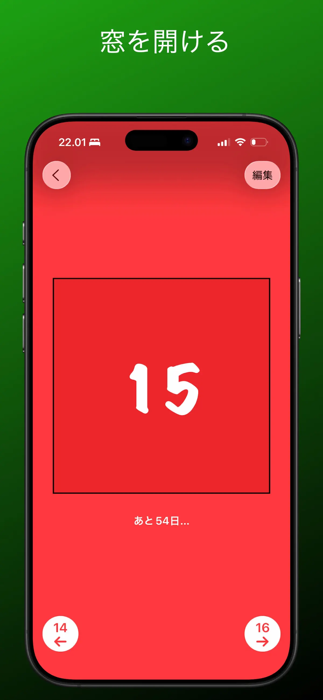

クリスマスカウントダウンアプリ — 毎日1つ窓を開けて待つ12月
よくあるクリスマスカウントダウンアプリは、「あと43日12時間6分」という数字を見せてくれます。眺めるのは1日4秒くらい。でもアドベントカレンダー形式なら、同じカウントダウンが毎日の儀式になります——12月の毎朝、開けるべき窓がひとつあり、その中には誰かがあなたのために入れた何かがあるのです。
Advent Maker — 24個のサプライズ付きカウントダウン
無料 · 広告なし · iPhone・iPad・Mac対応
カウントダウンの仕組み
カレンダーには12月1日〜24日の窓が24個。窓は1日に1つずつしか開けられず、まだ開かない窓をタップすると残り日数が表示されます。「クリスマスまであと何日？」という子どもの毎朝の質問にも、アプリがそのまま答えてくれます。

窓の中身は自分で入れるので——写真、メッセージ、動画、遊べる雪だるま——数字が小さくなるほどカウントダウンは盛り上がります。12月24日の窓は、あなたが演出するフィナーレです。
タイマーに勝るカウントダウンの使い方
- 子どもに：毎日の窓そのものがカウントダウン。小さなミッションやダジャレを添えて（子ども向けガイド）
- 遠距離の恋人に：クリスマスと再会、2つのカウントダウンを同時に（遠距離ガイド）
- 自分に：「良いコーヒーを1杯」「好きな映画を1本」など、12月の小さなご褒美を24個仕込んで毎朝自分で開ける
- 家族グループに：同じカレンダーファイルを全員に送って、毎朝グループチャットで今日の窓の感想会
のぞき見できない設計：紙のカレンダーと違って、明日の窓は今日は物理的に開きません。どんなに気になっても、お楽しみはちゃんと24日間続きます。
無料・広告なし・データ収集なし
Advent Makerは完全無料で、広告もサブスクもアカウント登録もありません。データ収集もゼロ——子どもに渡すカウントダウンアプリならここは要チェックです。クリスマスが終わっても、カレンダーは1年の写真とメッセージの思い出アルバムとして残ります。
今年のカウントダウンは、ちゃんと楽しく。
24個の窓、毎日の儀式、費用はゼロ。